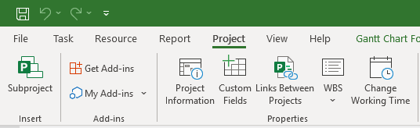
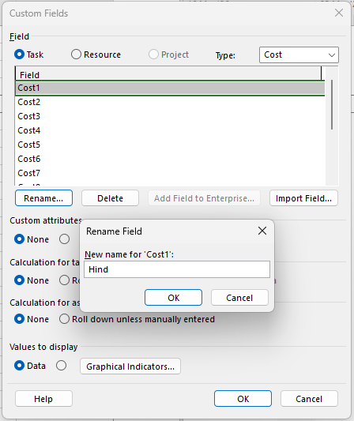
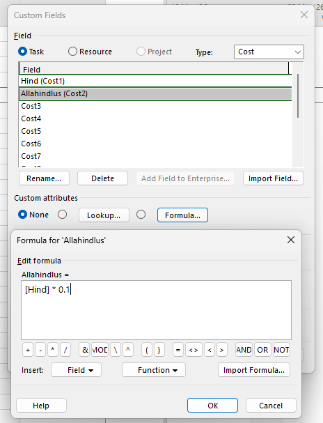
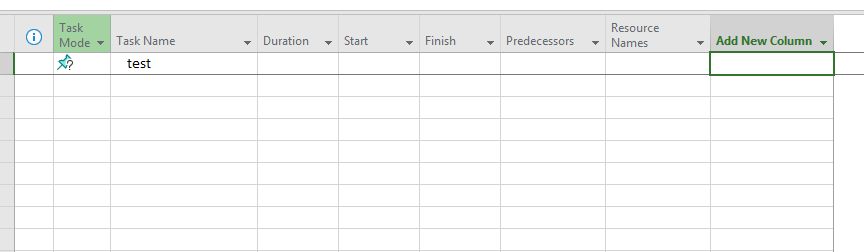
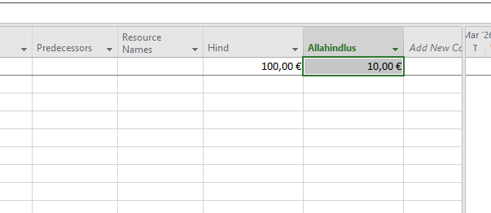

Vali Custom Fields
Alusta kohandatud väljade konfigureerimist:
- Mine Project vahekaardile.
- Klõpsa nupule Custom Fields.

Automatiseeri oma andmed kasutades MS Projecti võimsaid arvutusvälju ja valemeid.
Alusta kohandatud väljade konfigureerimist:

Määra, millist tüüpi infot soovid arvutada:

Defineeri matemaatiline seos:
[Hind] * 0.1 (või kasuta enda loodud välja nime).
Lisa uus väli oma tabeli vaatesse:

